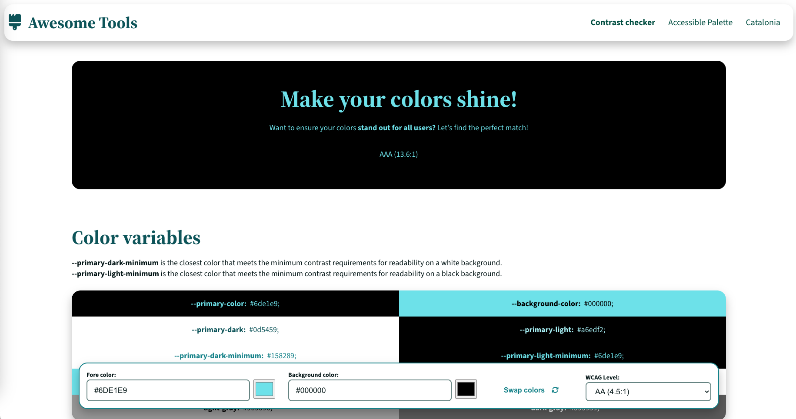

 Check color contrast Try me! I'll tell you if your colors have a good contrast and if they isn't, I should suggest the most similar color.
Generate accessible palette I work similar as "Check color contrast" with a few diferences. I'll tell you if your colors have a good contrast and if they isn't, I should suggest the most similar color.
Catalonia interactive map Do you want to show somewere of Catalonia, in this map I'll help you width it. You can customize the map.